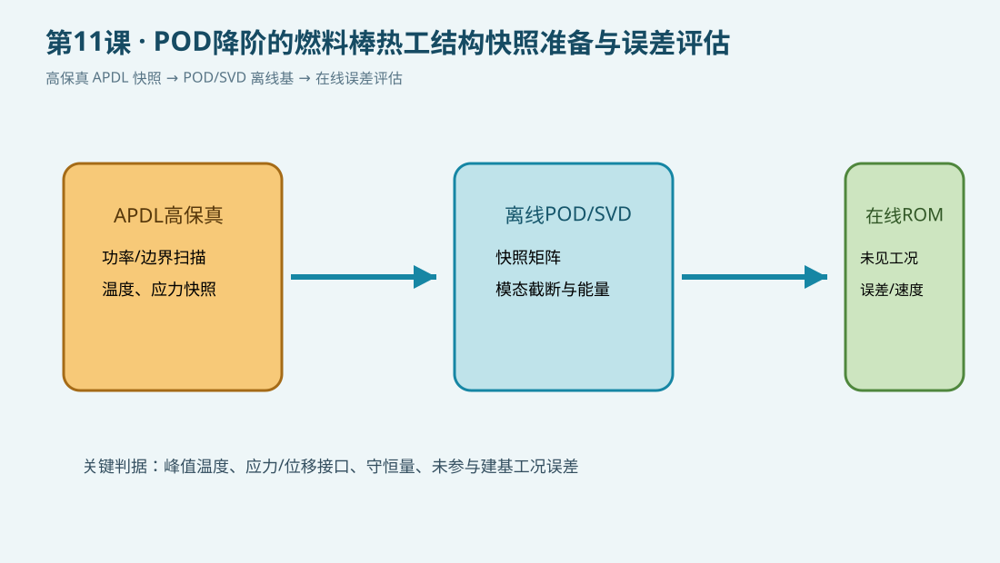

{kind=link}
验证状态：已静态检查，尚未运行 MAPDL
已静态核对SI单位、轴对称热分析流程、五工况快照输出和每条可执行命令的中文行尾注释；POD/SVD在外部后处理中完成，本机未运行MAPDL。

/CLEAR/PREP7PLANE55KEYOPTMPRECTNGAATTAGLUEAMESHBFASFL*DOSOLVE*GET*VWRITE
今日目标
用 APDL 生成一组燃料—间隙—包壳稳态热场快照，明确 POD/SVD 的离线输入、在线输出和误差验证边界。POD 分解在外部脚本或 Python 中完成，APDL 负责可追溯的高保真样本生成。
物理问题
采用 SI 单位制。燃料体积热源在五个功率工况下扫描，包壳外表面施加对流边界；每个工况求得温度场，并将峰值、平均值和工况参数写入文本。正式研究时应把温度场、热应力、位移和接触量组成快照矩阵，使用未参与建基的工况做盲验证。
关键命令
/PREP7、RECTNG、AMESH：建立轴对称热模型并划分网格。*DO：扫描功率工况，生成离线快照。SOLVE、*GET、*VWRITE：求解、提取并保存快照摘要。
完整脚本
下载 [example.inp](example.inp)。每条可执行命令均附中文行尾注释；static_only 表示本机未运行 MAPDL，不宣称数值已经求解验证。
POD 工作链
- APDL 离线扫描功率、边界温度和材料参数，保存快照及元数据。
- 外部脚本对快照矩阵做中心化、SVD 和模态截断，记录能量阈值。
- 用截断基构造 ROM/POD-Galerkin 或 DEIM/超降阶模型。
- 以未见工况比较峰值温度、应力、位移、守恒量和在线耗时。
预期结果
随着体积热源提高，燃料峰值温度应总体升高；五个工况均应输出可被外部 POD/SVD 程序读取的摘要。正式 ROM 还需比较温度场、应力和位移的重构误差。
验证清单
- 至少保留一个未参与建基的功率—边界组合。
- 同时检查场误差和安全相关峰值误差，不能只报告平均误差。
- 检查快照网格、节点编号、单位和边界历史完全一致。
- 将模态数、误差、速度和外推检测写入
metadata.json或实验记录。
常见错误
- 只用单一工况建基，导致事故瞬态外推失真。
- 把 POD 降阶误差与网格误差混在一起。
- 只验证温度而忽略包壳应力、接触状态和能量守恒。
练习
- 将快照工况扩展到冷却剂温度和对流系数同时变化。
- 用 Python 对温度快照做 SVD，比较不同模态数下的峰值温度误差。
- 加入热应力结果并检查未见工况的外推风险。
完整 example.inp（逐行中文注释）
01! 第11课：POD降阶的燃料棒热工结构快照准备；SI单位 m、kg、s、K、Pa 02/CLEAR,NOSTART ! 清空数据库，建立独立教学算例 03/FILNAME,lesson11_pod_snapshot ! 设置输出文件名前缀 04/PREP7 ! 进入前处理器 05rf=4.00e-3 ! 燃料半径，单位 m 06rc_i=4.10e-3 ! 包壳内半径，单位 m 07rc_o=4.75e-3 ! 包壳外半径，单位 m 08height=0.10 ! 教学轴向长度，单位 m 09qv0=2.0e8 ! 基准燃料体积热源，单位 W/m^3 10hcool=2.0e4 ! 外表面对流系数，单位 W/(m^2 K) 11tbulk=580 ! 冷却剂体温，单位 K 12*DIM,snap,ARRAY,5,4 ! 定义五个快照工况和四个输出量的数组 13*CFOPEN,lesson11_snapshots,txt ! 打开快照摘要文件 14*VWRITE ! 写入快照文件表头；下一行为格式 15('case,qv[W/m3],Tmax[K],Tavg[K],status') ! 写入列名 16*DO,icase,1,5,1 ! 循环五个离线快照工况 17 qv=qv0*(0.80+0.10*(icase-1)) ! 改变功率参数，形成快照样本 18 ET,1,PLANE55 ! 定义二维热传导单元 19 KEYOPT,1,3,1 ! 设置轴对称热分析选项 20 MP,KXX,1,3.0 ! 设置燃料等效导热率，单位 W/(m K) 21 MP,KXX,2,16.0 ! 设置包壳导热率，单位 W/(m K) 22 RECTNG,0,rf,0,height ! 创建燃料 r-z 截面 23 AATT,1,,1 ! 给燃料区域指定材料1和单元1 24 RECTNG,rf,rc_i,0,height ! 创建等效间隙区域 25 AATT,1,,1 ! 采用教学等效材料表示间隙导热 26 RECTNG,rc_i,rc_o,0,height ! 创建包壳 r-z 截面 27 AATT,2,,1 ! 给包壳区域指定材料2和单元1 28 AGLUE,ALL ! 合并相邻区域拓扑 29 ESIZE,0.15e-3 ! 设置目标网格尺寸，单位 m 30 AMESH,ALL ! 对全部区域划分网格 31 ASEL,S,LOC,X,0,rf ! 选择燃料区域 32 BFA,ALL,HGEN,qv ! 施加当前快照的体积热源 33 ALLSEL,ALL ! 恢复全部选择集 34 LSEL,S,LOC,X,rc_o ! 选择包壳外边界 35 SFL,ALL,CONV,hcool,tbulk ! 施加外表面对流边界 36 ALLSEL,ALL ! 恢复完整选择集 37 FINISH ! 完成当前快照前处理 38 /SOLU ! 进入求解器 39 ANTYPE,STATIC ! 设置稳态热分析作为快照基准 40 SOLVE ! 求解当前快照温度场 41 FINISH ! 结束当前快照求解 42 /POST1 ! 进入后处理器 43 SET,LAST ! 读取最后结果集 44 *GET,tmax,NODE,0,MAX,TEMP ! 提取全模型最高温度，单位 K 45 *GET,tavg,NODE,0,AVER,TEMP ! 提取节点平均温度，单位 K 46 snap(icase,1)=icase ! 保存快照编号 47 snap(icase,2)=qv ! 保存快照功率 48 snap(icase,3)=tmax ! 保存峰值温度 49 snap(icase,4)=tavg ! 保存平均温度 50 *VWRITE,icase,qv,tmax,tavg ! 输出快照摘要供外部POD程序读取 51 (F6.0,',',E16.8,',',F16.4,',',F16.4,',solved') ! 设置摘要格式 52 FINISH ! 结束当前快照后处理 53 /CLEAR,NOSTART ! 清空数据库，避免快照之间累积几何 54*ENDDO ! 结束五个快照工况循环 55*CFCLOS ! 关闭快照摘要文件 56/POST1 ! 重新进入后处理器 57*CFOPEN,lesson11_pod_note,txt ! 创建POD离线—在线说明文件 58*VWRITE ! 写入POD处理提示 59('Use lesson11_snapshots.txt as snapshot metadata; compute SVD/POD modes externally.') ! 说明SVD/POD在外部脚本完成 60*CFCLOS ! 关闭POD说明文件 61FINISH ! 结束第11课算例